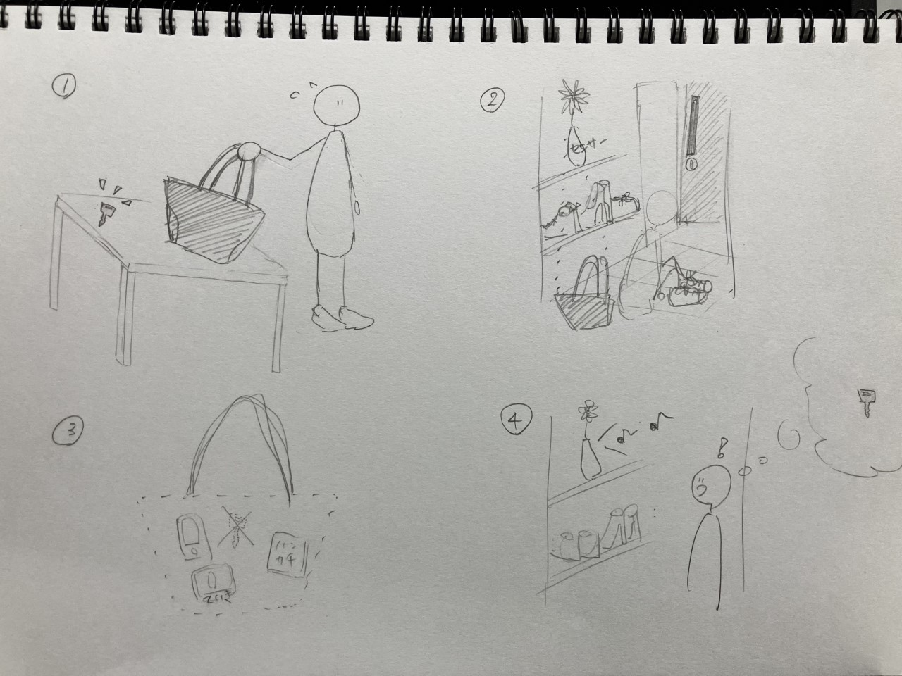

IoT・データの収集で何ができるか
＜グループワーク＞
・駅の利用者数の把握
・お肉の中の焼け具合が分かる。
・材料の量を測って適量の調味料を入れてくれる。
・選択肢が多い時に何が１番いいかをいろいろな情報から判断してくれる。
・鍵を取り出さなくても近づいたら玄関が開く。
・布団の温度を自動で調節
・進んでいる速度に合わせて目的地に何分で着くか判断してくれる。
＜ストーリーボード＞
忘れ物０

外出時に必ず持っていくものや、次の日に絶対忘れたくないものなどを事前に登録しておく。
↓
家から出るときに玄関に取り付けたセンサーが登録されたものが全て身につけられているかを読み取る。
↓
身に着けていないものがあったら音や光で教えてくれる。
＜友達との意見交換＞
・忘れ物自体からも音がでるようにすればすぐに見つけられてよい。